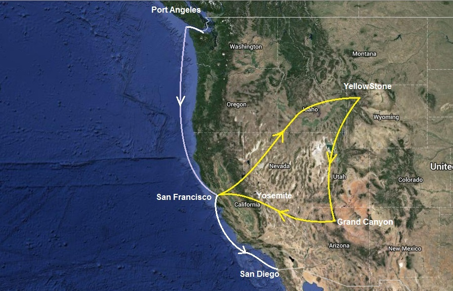

|
La traversée de Victoria à Port Angeles est longue de plus de 20 nautiques, en plein bras de mer. Nos qualités de marin ont été mises à rude épreuve... La traversée de Neah Bay à San Francisco est longue de plus de 720 nautiques. A part la troisième journée marquée par un vent de 30 à 35 noeuds au portant, ce fut fort calme, l'air parfumé des effluves aromatiques émanant de nos moteurs Notre programme en quelques mots: Traversée jusqu'à San Francisco, petit tour en campervan dans les parcs de l'ouest américain et, en novembre, direction San Diego et la chaleur en visitant les îles au large de Los Angeles. |
 |
| Date | Lieu | Log (nm) |
| 26/08/2013 au 04/09/2013 | Port Angeles | 23270 |
| 04/09/2013 au 05/09/2013 | Neah Bay | 23320 |
| 05/09/2013 au 10/09/2013 | Neah Bay to San Francisco | 24030 |
| 10/09/2013 au 07/11/2013 | San Francisco | 24040 |
| 09/11/2013 au 11/11/2013 | San Miguel Island | 24305 |
| 11/11/2013 au 12/11/2013 | Santa Cruz Island | 24325 |
| 12/11/2013 au 13/11/2013 | Santa Barbara Island | 24375 |
| 13/11/2013 au 14/11/2013 | Catalina Island | 24405 |
| 15/11/2013 au 13/01/2014 | San Diego | 24490 |